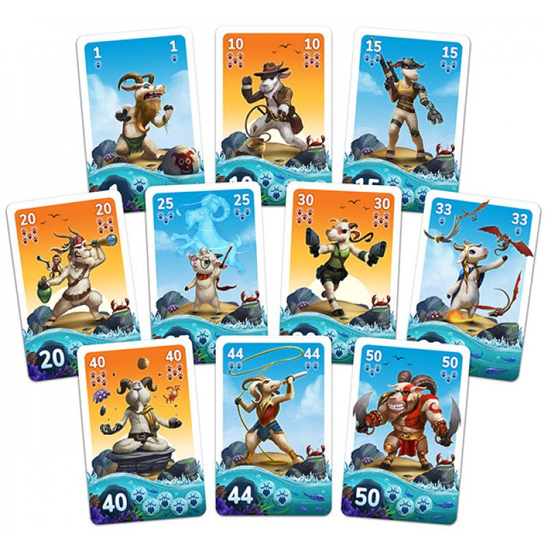

Sobre
Bode of War, é um jogo de cartas que se em suas regras se acemelha ao jogo 21 , porém neste, a pontuação máxima, que seria o 21, varia no decorrer da partida e de jogo para jogo.
Bode of War, é um jogo de cartas que se em suas regras se acemelha ao jogo 21 , porém neste, a pontuação máxima, que seria o 21, varia no decorrer da partida e de jogo para jogo.
Em um jogo de Bode of War, os jogadores pegam 8 cartas no começo e tem como objetivo, acumular uma montuação igual ou o mais próximo pocivel do tamanho final da ilha. Nas quatro primeiras rodadas, ao final o jogador que perdeu a rodada pega uma carta de ilha que possue dois valores, e escolhe qual será somada ao tamanho atual da ilha.
O vencedor é aqeuele que possuir o numéro exato de bodes que cabem dentro da ilha, ou que chegarem o mais próximo possivel, sem extourar o limite.
As cartas possuem dois valores, sendo o número, o valor que essa carta tem, variando de 1 a 50 sem sem repetir, já a quantiade de cabecças de bodes desenhas, em baixo do numero, representa quantos bodes aquela carta possue.
